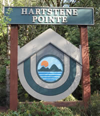

About the Pointe
A unique community on the northern tip of Harstine Island, set within a verdant forest and surrounded on three sides by the waters of Puget Sound.
Hartstene Pointe is a unique community located on the northern tip of Harstine Island, set within a verdant forest, and surrounded on three sides by the waters of Puget Sound. The Pointe is approximately 215 acres in size and is situated about 18 miles northeast of the City of Shelton in Mason County, Washington.

In 1970 Weyerhaeuser established Hartstene Pointe as a not-for-profit corporation. While Hartstene Pointe was originally planned to be a recreational community, a significant number of the homes serve as primary residences today. The Pointe consists of 532 private residential lots, 90 of which are condominium “Island Houses”, along with a private road system, a 6,000 sq. ft. Clubhouse, a swimming pool and hot tub, three tennis courts, a basketball court, a pickleball court, about 5.5 miles of walking trails, a 110-slip marina, a boat launch, picnic areas and 3.5 miles of private beach.
Decades on, Hartstene Pointe remains heavily wooded with Douglas fir, hemlock, cedar, madrona, maple and various other deciduous trees. The area is also home to a significant population of birds, deer and raccoons, and bald eagles have been sighted along the water's edge. Along its perimeter, Hartstene Pointe gives magnificent views of Puget Sound, Mt. Rainier and the Olympic Mountains.
HPMA, the organization
“The Pointe” is incorporated as a non-profit homeowners' association, as described in our Governance section. HPMA is governed by a seven-member Board of Directors and administered by a General Manager, with a staff of five full-time employees and up to eight part-time patrol, pool-monitor and maintenance personnel.
Harstine Island, a remote paradise
Harstine Island, approximately ten miles long and three miles wide, is located at the southern end of Puget Sound, 18 miles from the nearest town, Shelton. The island is accessible by a bridge from Highway 3 that links Shelton to Bremerton.
Lured by the quiet beauty and low cost of land, early settlers farmed, logged, planted orchards, and gathered clams and oysters from the sea. The settlers built schools and stores, and in 1914 volunteers erected the Community Hall, which is still actively used today. Electricity and telephone were not available on the island until 1947. A ferry provided transportation across the passage until 1969, when a bridge was built connecting the island to the mainland. Hartstene Pointe development followed soon afterward.
The Hartstene Pointe Water-Sewer District
The community established the Hartstene Pointe Water-Sewer District, which acquired the water and sewer utilities formerly owned and operated by Mason County. The District is a totally separate government entity and is not run by Hartstene Pointe. Visit hpwsd.org for service and billing.